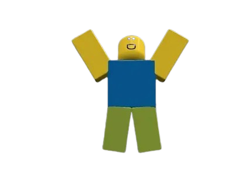

Собираю форму, стиль и интерактив.
JARVIS NEXT // control hub
Холодный запуск
Пролог
01 / 06
Luau, ассеты, хаб, физика и игровые петли.
Выполняю действия и держу рабочий контур.

Проводник хаба
Появляется в прологе и не забирает себе главный экран.
Доступ
Единый вход без лишнего мастераBOOT SEQUENCE
Холодный запуск
Я поднимаю ядро, проверяю канал пользователя и готовлю операторский хаб к работе.
Трасса запуска
cold_boot
Голос ядра
Слышу контур
Связь установлена.
Я поднимаю ядро доступа и собираю ваш рабочий контур.
JARVIS NEXT // live hub
Контрольный хаб
Один мозг, один shell, много контуров. Вся тяжёлая механика спрятана под задачей.
Голос
Главный контур
Диалог и исполнение
Asset-first
Dry-run
Recovery